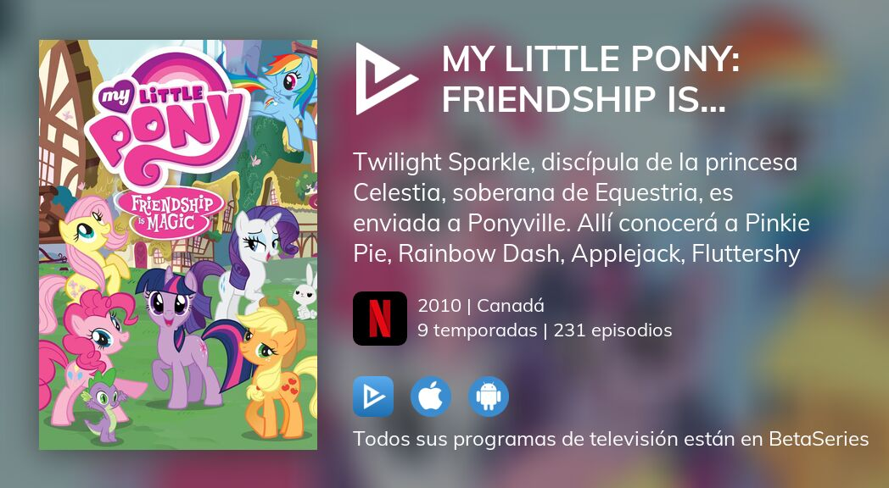

My Little Pony
Episodios
La genracion 4 cuenta con 9 temporadas con mas de 200 episodios, tambien con varias peliculas. Acontinuacion dehamos el orden para ver todo:
- Temporada 1:
Cuenta con 26 episodios, donde el villano principal es Nightmare Moon y la llegada de los elementos de la armonia.
- Temporada 2:
Cuenta con 26 episodios, donde el villano principal son Discord y Reina Chrysalis y la utilizacion de los elementos de la armonia con sus portadores.
- Temporada 3:
Cuenta con 13 episodios, ya que parte del presupuesto fue puesto en la pelicula que viene despues de esta temporada. En esta temporada el villano inicial es el Rey sombra, tambien podemos destacar a Trixie como buena villana. Tambien presenciamos al final como Twilight se transforma en alicornio, pasando a ser parte de la realeza siendo princesa.
- Equestria Girls:
Primera pelicula donde Twilight viaha a otro universo para recuperar su elemento de la armonia robado por la villana que es Sunset Shimmer.
- Temporada 4:
Cuenta con 26 episodios, donde la problematica inicial fue ayudar al arbol de la armonia a recuperar su poder devolviendoles los elementos de la armonia. En este Punto Discord empezaria a redimirse y ayudar con este problema, ponele. El villano que apareceria al final es Lord Tirek y el nuevo poder de las portadoras de los elementos de la armonia, para que estas no tengan q utilizarlo, aunq esto solo se demuestra que lo que activa este poder es la magia de la amistad.
- Equestria Girls: Rainbow Rocks:
Segunda pelicula, donde Twilight vuelve a este otro universo para detener a las Dazilings, sirenas del mundo pony que empezaron a perturbar a los humanos de ese mundo. Tambien vemos como se redimio Sunset Shimmer tras estos sucesos y el de la pelicula anterior.
- Temporada 5:
Cuenta con 26 episodios, donde el villano principal es Starlight Glimmer, una pony con pensamiento cominista reclamando que si todos fueramos iguales seriamos mas felices y que eso significa la amistad. Esto viene relacionado al tema de las cuite marks donde pasan muchos sucesos relacionados con estas. Al final Starlight comprende y se redime, convirtiendose en la primera estudiante de la princesa Twilight ya que a esta le impresiono su poder magico y que Starlight tras comprender mehor la amista quiere aprender mas sobre este.
- Equestria Girls: Friendship Games:
Tercera pelicula donde las chicas humanas del otro mundo conocen a la version de twilight de su mundo y la integran a su grupo, cosa q es dificil ya que twilight esta acostumbrada al rechazo y no sabe nada sobre la amistad, ella solo quiere entender sobre la magia que rodea a las protagonistas, y cuando lo logra se convierte en Midnight Sparkle, pero Sunset la hace recapacitar y hacerle ver la verdadera magia se aprende y esta en la amistad.
- Temporada 6:
Cuenta con 26 episodios, donde vuelve como villana la reina chrysalis y los personahes que fueron villanos y ahora son buenos, salvarian el dia, trayendo una rebelion de los cambiantes ante la reina chrysalis y haciendo las paces entre cambiantes y ponies.
- Equestria Girls: Legend of Everfree:
Cuenta la historia de como las protas del otro mundo llega magia extraña que deben buscar y solucionar. con esta pelicula, se abre la mini serie que tendran estos personahes y se aleha de la serie original para que se vean como dos proyectos.
- Temporada 7:
Cuenta con 26 episodios, donde el villano principal es el poni de las sombras y traeria de vuelta a los heroes ponies de leyendas para que vuelvan a solucionar problemas del mundo pony.
- My Little Pony: The Movie:
Cuenta la historia de como el tirano del rey tormenta llega al continente pony a gobernarlos como lo hiso con las otras especies de otros continentes. Trae la redencion de Tempest Shadow, fiel seguidora del rey tormenta, que al final este moriria gracias a ella. Tambien la paz entre Ponies y los Hippogrifos que tiene la habilidad de convertirse en Ponies Marinos.
- Temporada 8:
Cuenta con 26 episodios, donde la trama se enfoca en la nueva escula de la amistad que abre Twilight, el cual admitaria a distintas especies, no solo ponies. El gran supervisor de colegios, le parece q esto no es bueno ya que la amistad debe ser algo que solo tengan en cuenta los ponies para protegerse de la llegada de otras especies, en otras palabras, el villano es el racismo, pero todo da un giro en la trama ya que quien termina siendo la supervillana es Cozy Glow, una ponie que queria eliminar toda la magia de equestria para que ella se haga amigos de todos y sea la unica con magia. Es una mala estudiante y aprendio todo mal. Al final es encerrada en el tartaro huntoa Tirek quien la ayudo a emplear este plan.
- Temporada 9:
Cuenta con 26 episodios y es el final de la serie. Aca se cierra todos los arcos de personahes y situaciones. Aca twilight se prepara para convertirse en reina de equestria. Los villanos que quedaron vivos se unen para tomar fuerzas contra los ponies, pero terminan fracasando. Asi twilight se convierte en reina y da paz a todas especies.
